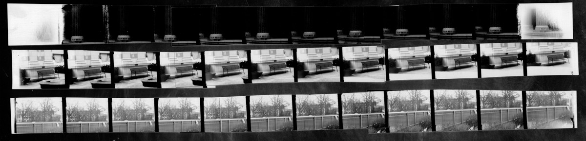
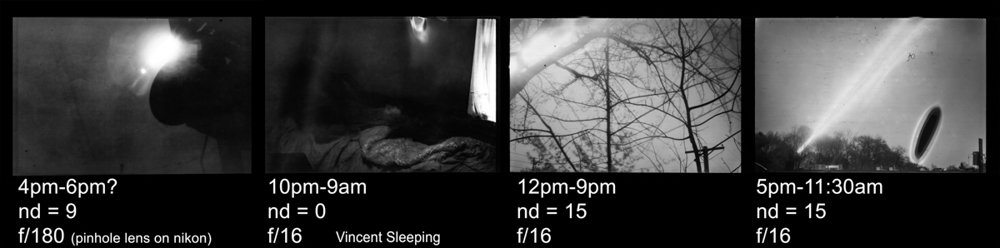

This project attempts to capture the motion of the sun using ultra-long exposure film photography.
This project examines photography in two modes– The first is with a focus on what’s presented in the image– subject matter, and narrative. The second is a focus on how the image is created– technique and technology. This project developed to prioritize these equally to tell a story about my experience with time and sleep disorders and boredom and from being interested in the technical challenge of solving something I haven’t seen attempted before.
Conceptually, the project aims to compress AN EXTENT of time into ONE space. The reasoning is that analog photogaphy represents time in a single frame compared to how video represents time across a series of frames. The single frame contains as much experience as the video or lived event, but all the hours are compacted into the same place and moment. This means the long-exposure photo is an object with an unusual density of time.
The sun was chosen as subject matter because it's speed is universally understood and it leaves a distinct mark rather than a smudge. With the sun the image contains the key to deciphering the exposure duration without requiring external context. I also am aquainted with daylight as a motif to represent boredom and my experience with sleep disorders. It feels beautiful and empty to me.
The other motivation for this project was curiosity about the limits of photography. Photos begin being referred to as "long exposure" after the one second mark. I've seen film photography projects push past that mark into the 2-3 hour range, and months-long solargrams burned into paper, but nothing falling in the middle.
 